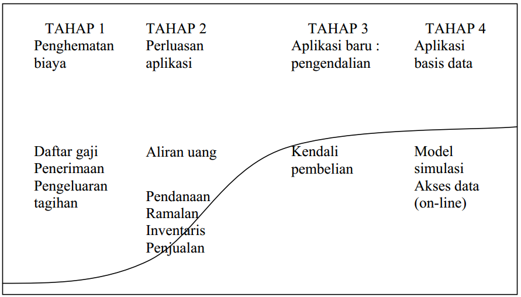
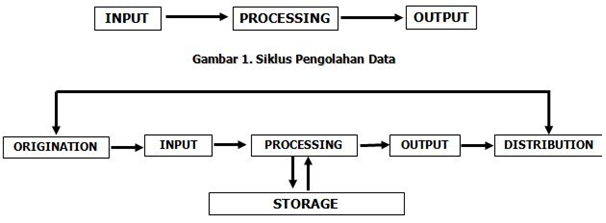

<!DOCTYPE html>
<html lang="en">
<head>
	<meta charset="UTF-8">
	<meta name="viewport" content="width=device-width, initial-scale=1.0">
	<title>pertemuan_9</title>
	<link rel="stylesheet" href="style.css">
</head>
<link rel="stylesheet" href="css/bootstrap.min.css">
<body>
	<div class="navigasi d-flex justify-content-center fixed-top">
		<nav aria-label="Page navigation example">
		  <ul class="pagination">
		    <li class="page-item"><a class="page-link" href="https://zakaria-design.github.io/pertemuan8/">Previous</a></li>
		    <li class="page-item"><a class="page-link" href="https://zakaria-design.github.io/pertemuan9/">Pertemuan_9</a></li>
		    <li class="page-item"><a class="page-link" href="https://zakaria-design.github.io/pertemuan10/">Next</a></li>
		  </ul>
		</nav>
	</div>
	<div class="container">
		<div class="judul">
			<h2>PERTEMUAN 9</h2>
			<h2>DUNIA USAHA</h2>
		</div>
		    <h3>TUJUAN PEMBELAJARAN</h3>
			<p>Setelah mengikuti materi pada pertemuan ke-9 ini mahasiswa mampu 
				memahami teknik pengolahan data yang berbasis komputer untuk dunia usaha.
			</p>
			<h3>URAIAN MATERI</h3>
		<div class="materi">
			<ol type="1">
				<li class="sub-judul">Manfaat Komputer Dalam Bisnis</li>
				<p>Fungsi dari komputer dalam 30 tahun ke belakang hanya sebatas 
					penghitungan, pencatatan, surat-menyurat, dan eksekusi sederhana lainnya. 
					Namun pada saat ini seiring didukung oleh perkembangan dari komputer dan 
					perangkat lainnya, kegunaan komputer lebih luas, mulai dari hiburan, keperluan 
					kantor, menganalisa, sumber informasi, dan mengontrol sesuatu.
				</p>
				<p>Dalam kegiatan transaksi rutin pada perusahaan retail digunakan mesin 
					cashier, segala bentuk transaksi dapat tercatat dengan jelas, pihak manager 
					retail juga dapat mengontrol segala kegiatan dari mesin cashier dengan cepat, 
					kapanpun, dan dimanapun dengan terhubung jaringan internet.
				</p>
				<p>Dalam dunia bisnis, komputer biasanya digunakan untuk proses 
					administrasi keuangan, statistic kemajuan, data stok barang, prediksi untuk 
					penjualan, bahkan hingga untuk merencanakan bisnis masa depan, dsb. Dalam 
					hal tersebut diperlukannya data-data perusahaan yang valid dan diinput 
					kedalam software komputer, dikelola dalam software, sehingga menghasilkan 
					laporan yang diinginkan oleh owner/manager sebuah usaha untuk mengambil 
					sebuah kebijakan untuk suatu usaha atau mengetahui perkembangan suatu 
					usaha.
			    </p>
			    <li class="sub-judul">Evolusi Pengolahan Data</li>
			    <p>Di era perdagangan yang semakin besar dan bebas, memunculkan 
					banyaknya persaingan dan saling adu unggul dalam hal produk, ini merupakan 
					tantangan yang tidak mudah bagi pelaku bisnis. Ini menjadi isu bagi bangsa 
					dan rakyat Indonesia untuk dapat bersaing secara sehat dan tidak sikut 
					menyikut dengan cara yang tidak baik atau melakukan kecurangan. Untuk itu diperlukan evolusi dalam pengolahan data agar tidak terjadi kecurangan dalam hal manipulasi data. Berikut adalah Tahap dalam Evolusi Pengolahan Data sesuai dengan Kurva S.
				</p>
				
				<ul>
					<li>TAHAP 1:</li>
					<p>Tujuan utama tugas manusia digantikan oleh komputer adalah 
						penghematan biaya dari berbagai sektor.</p>
					<li>TAHAP 2:</li>
					<p>Perluasan aplikasi bertujuan mengalihkan SDM ke service, quality control, 
						operasional, analisa pengembangan system, dll (pekerjaan yang tidak bisa 
						digantikan dengan komputer).</p>
					<li>TAHAP 3:</li>
					<p>Pengendalian dalam pembelian dan penjualan.</p>
					<li>TAHAP 4:</li>
					<p>Menganalisa data-data yang sudah di input, untuk memprediksi penjualan kedepannya.</p>
				</ul>
				<p>Dampak yang terjadi adanya evolusi pengolahan data adalah bisa 
					digantikannya peranan manusia, dimana semua proses input di lakukan oleh 
					media komputer. Contoh profesi yang tergantikan oleh teknologi :
				</p>
				<div class="cabang-materi">
					<ol type="a">
						<li>Agen Penjualan, pada dasarnya agen penjualan sangatlah penting untuk 
							mempromosikan suatu barang atau jasa, tetapi dalam era sekarang agen 
							penjualan tergantikan dengan adanya e-commerce. </li>
						<li>Kasir, di negara-negara maju kasir mulai tergantikan dengan teknologi, 
							pelanggan dapat langsung menscan barcode yang tertera dalam produk 
							yang terhubung dengan alat pembayaran digital. Struk pembayaran 
							digunakan untuk pengecekan barang saat pelanggan meningalkan area 
							perbelanjaan.</li>
						<li>Teller, peranan teller sedikit tergantikan dengan mesin ATM (Anjungan 
							Tunai Mandiri) dalam melakukan beberapa jenis transaksi, seperti transfer, 
							setor tunai, melakukan validasi, dll.</li>
						<li>Operator Telepon, pekerjaan operator telepon sedikit digantikan dengan 
							mesin penjawab otamatis dalam menjawab beberapa pertanyaan dengan 
							memberikan panduan tentang hal-hal yang sering ditanyakan pelanggan 
							atau customer.</li>
						<li>Tukang pos, surat berbentuk fisik mulai digantikan dengan e-mail (electronic 
							mail). Sedangkan untuk perihal surat yang tidak bisa diketik dapat
							menduplikasikan dengan cara discan.</li>
						<li>Administrasi, profesi di bidang administrasi paling banyak perubahan yang
							signifikan dengan adanya perkembangan teknologi, dari mulai pendaftaran, 
							proses validasi, pencatatan, pembukuan, pelaporan, penyimpanan dan 
							segala bentuk informasi dapat diproses komputer.</li>
						<li>Masih banyak profesi lainnya yang tergantikan oleh teknologi komputer.</li>
					</ol>				
				</div>
				<p>Profesi baru dalam dunia digital dan evolusi pengelolahan data yaitu 
					programmer, data analyst, database administrator, dll.</p>	
				<li class="sub-judul">Dasar-dasar Database</li>
				<p>Basis Data atau Database merupakan suatu sistem untuk menyimpan 
					data dalam kapasitas besar dengan efisien dan tidak akan terjadi redudansi 
					data atau pengulangan data sehingga data menjadi lebih akurat. Database 
					adalah bagian tak terpisahkan dari aplikasi web. cPanel sudah memiliki shortcut 
					yang memungkinkan manajemen database dapat dilakukan dengan lebih 
					mudah. Asal usul komputasi Big Data dapat ditelusuri kepengembangan basis 
					data di Indonesia 1960-an. Bagian utama dari sejarah komputasi, database telah difokuskan tentang menangkap, menyimpan, mengelola, menanyakan, dan menganalisis data terstruktur.
				</p>
				<p>Apa yang dimaksud dengan database? Bagian berikut menjelaskan arti 
					data dan spreadsheet. Database diperkenalkan dengan menggunakan 
					spreadsheet sebagai titik awal.
				</p>
				<div class="cabang-materi">
					<ol type="a">
						<li>Data</li>
						<p>Data dapat mengambil banyak bentuk, termasuk angka, teks, gambar, 
							hyperlink, dan suara. Data dapat tentang subjek apa saja, atau sekitar lebih 
							dari satu subjek.
						</p>
						<li>Spreadsheet</li>
						<p>Seperti yang disebutkan, berasumsi bahwa terbiasa dengan spreadsheet, 
							beberapa contoh umum adalah Microsoft Excel, LibreOffice Calc, dan 
							Google Sheets. Spreadsheet digunakan sebagai titik awal untuk 
							menggambarkan basis data.
						</p>						
					</ol>					
				</div>	
				<p>Spreadsheet dan basis data keduanya digunakan untuk menyimpan dan 
					mengelola data. Cara paling sederhana untuk mengekspresikan perbedaan 
					adalah dengan menganggap spreadsheet sebagai kalkulator besar yang dapat 
					diprogram dengan canggih dan database sebagai sistem pengarsipan 
					elektronik yang membuat data tersedia dengan cepat untuk pencarian dan 
					analisis. Perbedaan utama antara spreadsheet dan database adalah 
					bagaimana mereka menyimpan, memanipulasi dan jumlah data yang terlibat. 
					Proses pengolahan data dibagi menjadi beberapa tahapan:
				</p>
					
				<div class="cabang-materi">
					<ol type="a">
						<li>Origination: proses pengumpulan data.</li>
						<li>Input: memasukan data ke sistem komputer melalui media input (perangkat 
							keras).</li>
						<li>Processing: proses seperti klasifikasi data pengurutan data, pengendalian 
							atau mencari data di lakukan pada proses ini.</li>
						<li>Output: hasil daripada proses mengolah suatu data yang berisikan 
							informasi sesuai dengan data yang sudah di inputkan.</li>
						<li>Distribution: proses memberikan hasil output kepada yang membutuhkan 
							suatu informasi. </li>
						<li>Storage: hasil akan disimpan kedalam media penyimpanan atau storage 
							device untuk memudahkan proses pencarian apabila di kemudian hari akan 
							digunakan kembali. </li>						
					</ol>					
				</div>
				<p>Metode-metode pemrosesan data akan selalu berubah mengikuti 
					perkembangan dunia modern. Pesatnya perkembangan teknologi informasi dan 
					komunikasi membawa dampak perubahan pada metode pemrosesan data. 
					Contoh-contoh metode pemrosesan data antara lain:
				</p>	
				<div class="cabang-materi">
					<ol type="a">
						<li>Pemrosesan Data dengan Metode Manual, Pada prosesnya masih 
							menggunakan tangan dan beberapa alat bantu untuk mengolah data.</li>
						<li>Pemrosesan Data dengan Metode Electromechannical, data-data 
							diproses menggunakan kemampuan manusia dan digabung dengan 
							kemampuan mesin.</li>
						<li>Pemrosesan Data dengan Metode Punched Card Equipment: data-data 
							diproses dengan menggunakan semua peralatan yang disebut sistem 
							warkat unit.</li>
						<li>Pemrosesan Data dengan Metode Electronic Komputer: Keakuratan 
							informasi dari hasi proses data dengan metode ini sangat tinggi serta hanya 
							memerlukan waktu yang begitu singkat karena pada prosesnya sudah
							menggunakan teknologi komputer.</li>
						<li>Pemrosesan Data dengan Metode Network Office: Pada prosesnya, 
							jaringan komputer perkantoran digunakan untuk pengolahan data-data. Hal 
							ini disebabkan karena diproses secara online baik dalam pembuatan 
							transaksi maupun laporan.</li>						
					</ol>					
				</div>
				<li class="sub-judul">Sistem Manajemen Basisdata</li>
				<p>Merupakan software khusus yang berguna untuk mengolah data yang di 
					inginkan di dalam basis data atau database. Sistem manajemen BasiData biasa 
					disebut senagai Database Management System (DBMS).
				</p>
				<p>DBMS memiliki hubungan yang erat dengan sistem basis data. DBMS 
					dan database merupakan pembentuk suatu sistem basis data. Sistem basis 
					data akan terbentuk apabila adanya interaksi dan saling terhubung antara 
					DBMS dengan database.
				</p>
				<p>Menghindari kekacauan pada saat pengolahan atau pemrosesan suatu 
					data yang berjumlah banyak, maka dalam jaringan komputer harus 
					menggunakan DBMS. Pengantara antara database dan pengguna adalah 
					DBMS dan pengguna juga harus menggunakan bahasa database yang sudah 
					ditentukan agar dapat berinteraksi dengan DBMS.
				</p>
				<p>Sebuah sistem yang efektif untuk memanajemen dan mengorganisir 
					sumber daya data. Itulah pengertian DBMS oleh Gordon C. Everest. Berikut ini merupakan beberapa tujuan dari pemanfaatan DBMS pada jaringan komputer perusahaan berdasakan fungsinya sesuai dengan pengertian 
					DBMS:
				</p>
				<div class="cabang-materi">
					<ol type="a">
						<li>Memelihara serta mengelola data dengan konsisten.</li>
						<li>Untuk mengganti tempat penyimpanan fisik seperti pembukuan di media 
							buku besar menjadi ke dalam emdia elektronik.</li>
						<li>Untuk memperoleh data yang sama serta memperoleh lebih banyak informasi.</li>
						<li>Agar basis data dapat digunakan secara bersamaan oleh beberapa pengguna.</li>
						<li>Cepatnya proses pengolahan data.</li>
						<li>Tidak perlu menggunakan space yang besar untuk menyimpan data.</li>
						<li>Keamanan data sangat terjaga.</li>
						<li>Meminimalisir terjadinya perubahan data dan mengawasi adanya pembaharuan data. </li>
						<li>Menghindarai serta mencegah terjadinya inkonsisten dan duplikasi data.</li>
						<li>Bertanggung jawab untuk mengolah data yang besar.</li>
						<li>Mendukung bahasa quary.</li>
						<li>Pengawasan backup database dan pemulihan dari kesalahan.</li>
					</ol>				
				</div>
				<p>Software DBMS yang sering digunakan untuk mengelola database 
					perusahaan jenis-jenisnya antara lain:</p>
				<div class="cabang-materi">
					<ol type="a">
						<li>MySQL</li>
						<li>Oracle</li>
						<li>Microsoft SQL Server</li>
						<li>Firebird</li>					
					</ol>					
				</div>
				<p>Pada umumnya sistem manajemen pengelolaan data memiliki beberapa 
					fungsional yang menjadi komponennya, yaitu :</p>
				<div class="cabang-materi">
					<ol type="a">
						<li>File Manager</li>
						<p>Dalam komponen ini, digunakan untuk representasi suatu informasi 
							yang tersimpan di dalam media penyimpanan elektronik.</p>
						<li>Database Manager</li>
						<p>Di dalam komponen ini, menyediakan sarana untuk antarmuka data 
							low level yanga da pada program aplikasi database.</p>
						<li>Query Processor</li>
						<p>Digunakan untuk menerjemahkan query yang di input agar dapat di 
							mengerti oleh database manager. </p>
						<li>DML Precompiler</li>
						<p>Digunakan untuk melakukan konversi perintah DML biasanya 
							ditambahkan ke dalam program aplikasi dalam bahasa utama prosedur 
							normal. </p>
						<li>DDL Compiler</li>
						<p>Digunakan untuk mengkonversikan perintah DDL di dalam tabel 
							yang berisikan data utama. </p>						
					</ol>					
				</div>
				<p>Kekurangan Sistem Manajemen BasisData (DBMS) antara lain:</p>
				<div class="cabang-materi">
					<ol type="a">
						<li>Ukurannya cukup besar karena DBMS sangat kompleks.</li>
						<li>Pada penggunaannya dinilai cukup kompleks</li>
						<li>Biaya bergantung pada fungsi yang disediakan serta lingkungan tempat 
							penggunaannya.</li>
						<li>Hardwarenya memiliki biaya tambahan.</li>
						<li>Bagi pengguna DBMS yang baru akan dikenakan biaya konversi.</li>
						<li>Performa kinerja akan menurun seiring berjalannya waktu.</li>
						<li>Kemungkinan untuk mengalami kegagalan yang besar akan terjadi karena 
							penurunan performa seiring berjalannya waktu.</li>						
					</ol>					
				</div>
				<li class="sub-judul">Data Menguntungkan Bisnis</li>
				<p>Mengumpulkan dan menganalisis data sangat penting untuk bisnis kecil 
					karena itu dapat meningkatkan efisiensi dan profit suatu usaha. Data dapat 
					memberikan catatan tentang apa yang telah berlangsung, siapa pelanggannya, 
					apa demografisnya, apa yang telah mereka beli dan kapan pelanggan biasa 
					membelinya, dari hal tersebut dapat memungkinkan suatu usaha menemukan 
					tren, misalnya produk favorit pelanggan, kapan waktu untuk stock barang. Data 
					bisa berikan arsip yang bisa dicari dan mengelompokkan produk yang dijual 
					bersamaan. Penggunaan data dalam bisnis kecil yaitu mencari tahu seberapa 
					besar progress perkembangan bisnis tersebut, dan data dapat membuat 
					mereka tertarik untuk mencari tahu lebih lanjut apa yang harus dilakukan 
					kedepannya untuk menjadi usaha yang lebih besar. Semua bisnis 
					mengumpulkan rincian tentang pendapatan dan pengeluaran untuk memenuhi 
					persyaratan pajak. Banyak bisnis yang mengumpulkan nama dan alamat 
					pelanggan mereka sehingga mereka dapat menghubungi mereka untuk 
					melakukan promosi yang lebih privasi. Manfaat yang bisa didapat dari penggunaan basis data dalam sebuah bisnis.
				</p>
				<div class="cabang-materi">
					<ol type="a">
						<li>Memberikan Pemahaman yang Solid tentang Pelanggan</li>
						<p>Bisnis kecil dapat secara efektif bersaing dengan perusahaan besar 
							dengan menargetkan pasar. Data membantu bisnis memahami pelanggan 
							lebih baik dan mengidentifikasi pasar ini lebih akurat, dengan menyimpan, 
							menyortir, dan memfilter data tentang pelanggan. Usaha kecil ditempatkan 
							dengan baik untuk membangun hubungan pribadi bersama pelanggan dan 
							pemasok. Penggunaan data secara efisien dapat menambah ekstra bobot 
							untuk keuntungan ini. Mempertahankan hubungan yang erat dengan 
							pelanggan, tidak hanya membantu bisnis tersebut dalam mempertahankan 
							pelanggan, tetapi juga dapat membantu profil pelanggan untuk pemasaran 
							kedepan.
						</p>
						<li>Mendapatkan Pemahaman yang Lebih dalam tentang Penjualan</li>
						<p>Dengan mengumpulkan dan menempatkan sebanyak mungkin 
							informasi tentang produk dan pelanggan untuk menjadi basis data, 
							pengusaha dapat melihat produk mana yang diminati, dan pelanggan kembali untuk pesanan berulang, barang mana yang tidak laku dengan 
							baik, dll. Fungsi-fungsi ini sangat memakan waktu bila dilakukan secara 
							manual. Misalnya, mengetahui 10 pelanggan teratas yang dapat dilihat 
							secara langsung. Pengusaha dapat membuat penawaran khusus hanya 
							untuk orang-orang / pembisnis lain atau mungkin membuat skema imbalan 
							untuk pelanggan setia ini.
						</p>
						<li>Kontrol Stok yang Efisien</li>
						<p>Dengan hanya melihat sekilas ke basis data, pengusaha dapat 
							melihat stok barang dan dari mana memesan persediaan selanjutnya. Basis 
							data juga dapat memperingatkan saat persediaan hampir habis sehingga 
							pelaku usaha dapat memesan lebih banyak sebelum kehabisan barangbarang penting.
						</p>
						<li> Menanggapi Perubahan</li>
						<p>Database yang terorganisasi dengan baik dapat membantu bisnis 
							merespon perubahan dan membuat keputusan. Jika data yang mencakup 
							banyak operasi bisnis tersedia melalui tautan tabel dalam database, 
							manajer dapat memperoleh pemahaman holistik tentang arus keadaan 
							bisnis sebelum membuat keputusan. Hal ini sangat berkaitan dengan usaha 
							kecil, yang seringkali dapat merespon lebih fleksibel untuk berubah 
							daripada bisnis yang lebih besar. Ini sering disebabkan oleh kurangnya 
							hierarki dalam usaha kecil.
						</p>
						<li>Analisis data</li>
						<p>Kemampuan query dan pelaporan dari database menjadikannya 
							sangat berharga. Sumber daya yang mampu untuk menganalisis data dan 
							memprediksi tren di masa depan, karena mereka dapat menarik data 
							secara bersamaan. Sebagai contoh, sebuah laporan dapat menunjukkan 
							bahwa penjualan produk tertentu meningkat setelah e-mail promosi, 
							sementara penjualan produk lain meningkat setelah promosi di toko.
						</p>
						<li>Meningkatkan Keamanan Data</li>
						<p>Kontrol dan otorisasi keamanan dapat diimplementasikan dalam 
							database dengan memindahkan data sensitif ke dalam tabel terpisah 
							dengan kontrol otorisasi sendiri. Ketika pengguna database masuk, mereka 
							hanya akan dapat mengakses data yang mereka diizinkan untuk melihat. 
							Misalnya, mungkin ada pembatasan pada bidang tersebut sebagai gaji karyawan, yang hanya dapat dilihat oleh mereka yang berhubungan 
                            langsung dengan daftar gaji.
						</p>					
					</ol>					
				</div>
				<li class="sub-judul">Suatu Usaha Tidak Menggunakan Database</li>
				<P>Alasan mengapa usaha kecil mengabaikan dalam menggunakan data 
					mereka untuk penggunaan yang bermanfaat seperti yang dibahas dalam 
					bagian sebelumnya. Tujuan dari bagian ini adalah untuk membantu pengusaha 
					memahami mengapa pengusaha belum mengambil keuntungan dari data yang 
					mereka punya. Tujuannya juga untuk mendorong pengusaha menjauh dari 
					keraguan yang mungkin dimiliki, yaitu:
				</P>
				<div class="cabang-materi">
					<ol type="a">
						<li>Terlalu mahal</li>
						<p>Banyak usaha kecil memiliki anggaran kecil dan menganggap 
							database terlalu mahal. Mereka percaya bahwa mereka harus membayar 
							ahli untuk membuat database. Namun perangkat lunak itu sendiri tidak 
							mahal dan versi open-source juga tersedia, misalnya Microsoft Access 
							mungkin sudah tersedia di versi Microsoft Office yang mereka gunakan, dan 
							beberapa suite perangkat lunak open-source memiliki database paket yang 
							tersedia, seperti OpenOffice dan LibreOffice. Kekhawatiran juga dapat 
							muncul bahwa perangkat keras baru dan mahal diperlukan. Ada banyak 
							pilihan, yang paling penting adalah database yang disimpan di 
							cloud/storage, yang membutuhkan investasi minimal dan pemeliharaan 
							perangkat keras.
						</p>
						<li>Terlalu Mengganggu</li>
						<p>Jika sebuah perusahaan berjalan dengan lancar mungkin ada 
							kekhawatiran bahwa implementasi sebuah database akan mengganggu 
							status dan menyebabkan kejatuhan dalam bisnis. Mungkin khawatir bahwa 
							suatu periode waktu akan muncul masalah saat menerima pesanan. Pindah 
							fisik ke database ke metode penyimpanan elektronik tidak sesulit yang 
							pengusaha pikirkan. Misalnya, biasanya ada metode cepat untuk 
							mentransfer data antara database dan spreadsheet dan sebagian besar 
							data dapat dengan cepat dimanipulasi ke titik dimana ia dapat disajikan 
							pada file spreadsheet. Sebuah cara yang masuk akal untuk memulai adalah 
							memilih area bisnis pengusaha untuk ditempatkan ke database, sehingga 
							setiap orang bisa mendapatkan dan digunakan untuk sifat teknologi baru. 
							Misalnya, pengusaha dapat memindahkan spreadsheet tentang detail kontak pelanggan ke satu tabel di bagian database dan memungkinkan 
							karyawan menjadi terbiasa untuk mengakses dan mengubah database. 
							Setelah semua orang terbiasa dengan tabel pertama, pengusaha dapat 
							mengimpor lebih banyak spreadsheet menjadi tabel tambahan. Perlu dicatat 
							bahwa spreadsheet dan database dapat digunakan bersama satu sama lain 
							sampai semua karyawan merasa nyaman. Pengusaha harus memastikan 
							pembaruan hanya dibuat untuk salah satu file dan kemudian ditransfer ke 
							yang lain sehingga perubahan tidak ditimpa. Metode yang paling jelas 
							adalah membuat perubahan pada spreadsheet dan kemudian mentransfer 
							perubahan ke database secara berkala. Transfer semacam itu dapat 
							diselesaikan dengan beberapa instruksi sederhana. yang dikenal sebagai 
							update query. Dengan cara ini spreadsheet tetap beroperasi seperti biasa, 
							tetapi karyawan dapat membuka database untuk melihat bagaimana data 
							disimpan dan dapat menjadi terbiasa dengan mengaksesnya.
						</p>
						<li>Akan Terlalu Banyak Waktu</li>
						<p>Seperti dalam semua aspek kehidupan, hanya anda yang dapat 
							menjawab pertanyaan berulang, "Seberapa buruk pikiran anda sebelum 
							melakukan sebuah perubahan?" Jika pengusaha menggunakan file kertas 
							dan berlari di sekitar kantor dengan panik setiap kali pelanggan 
							menghubungi, mencari file, masuk akal untuk meningkatkan efisiensi, 
							pengusaha perlu menginvestasikan waktu untuk belajar tentang database, 
							tetapi ini pada akhirnya lebih efisien daripada waktu jika terus bekerja 
							dengan sistem yang kedaluarsa. Pengusaha dapat mengimplementasikan 
							database dalam langkah-langkah kecil, seperti yang dijelaskan dalam 
							paragraf sebelumnya seperti manfaat basis data dan pentingnya data untuk 
							bisnis kecil. Keputusan bermuara pada keseimbangan antara investasi dan 
							imbalan, dan terserah bisnis individu untuk memutuskan di mana ia berada 
							pada spektrum.
						</p>
						<li>Terlalu Sulit untuk Belajar dan Melaksanakan</li>
						<p>Mungkin sulit untuk mempelajari tentang basis data ketika 
							pengusaha belum pernah menggunakan sebelumnya. Tapi, jika sudah 
							menggunakan pengolah kata dan spreadsheet, langkah tersebut untuk 
							menggunakan database tidak sesulit yang dikira.
						</p>
						<li>Terlalu Rendah pada Daftar Prioritas</li>
						<p>Menjalankan bisnis kecil bisa sangat berat, dengan jam kerja yang 
							panjang dan sedikit waktu untuk tetap terorganisir. Pengusaha mungkin 
							memiliki daftar panjang hal-hal yang ingin disortir, sebelum mencoba fokus 
							pada data, untuk meningkatkan fungsi bisnis, pengusaha mungkin 
							cenderung untuk fokus pada prioritas yang lebih tinggi, seperti mengambil 
							langkah untuk meningkatkan manajemen kantor, menyimpan catatan, dan 
							menyimpan produk dan persediaan barang. Hanya dengan hal seperti itu 
							akan merasa dapat melihat data perusahaan. Namun jika pengusaha 
							memulai dengan database, kemungkinan besar yang bagian lainnya dari 
							bisnis akan membutuhkan organisasi yang cermat untuk proses bekerja 
							secara efektif. Ini karena data sering menjangkau semua area bisnis seperti 
							pelanggan, penjualan, dan inventaris.
						</p>
						
					</ol>
					
				</div>

			</ol>
		</div>
	</div>
	
</body>
</html>
